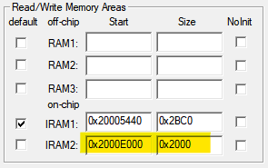

Cache是CPU内部缓存，用于临时存储CPU需要频繁访问的数据和指令，以加快CPU的数据访问速度；而RAM是主存储器，用于存储程序和数据，是CPU和外部设备之间的桥梁，其访问速度相对较慢。
速度：Cache的访问速度非常快，一般能够达到纳秒级别的响应速度；而RAM的访问速度相对较慢，一般需要几十到几百纳秒的时间。
容量：Cache的容量比RAM要小得多，一般只有几百KB到几十MB的大小；而RAM的容量比Cache要大得多，一般从几百MB到数GB不等。
成本：Cache的制造成本较高，但是由于其容量较小，因此总成本相对较低；而RAM的制造成本较低，但是容量较大，因此总成本相对较高。
ING916XX 的 Cache 由 I-Cache-M 和 D-Cache-M 两部分组成，均可作为 RAM 使用，在使用之前我们先进行 Coremark 跑分，测试一下映射为 RAM 与否对整个系统性能的影响。
| 名称 | 起始地址 | 大小（KiB） | 备注 |
|---|---|---|---|
| D-Cache-M | 0x2000E000 | 8 | 可映射为RAM |
| I-Cache-M | 0x20010000 | 8 | 可映射为RAM |
Coremark 跑分
我们将 I-Cache-M 和 D-Cache-M 是否映射为 RAM 所组成的 4 种情况分别进行跑分（编译器为 GCCClang 16.0.0），其跑分的结果如下表所示。
| I-Cache-M 映射方式 |
D-Cache-M 映射方式 |
MHz | Iterations | Coremark | Coremark/ （/MHz） |
|---|---|---|---|---|---|
| Cache | Cache | 201.60 | 15000 | 596.4 | 2.96 |
| RAM | Cache | 201.60 | 200 | 8.80 | 0.04 |
| Cache | RAM | 201.60 | 15000 | 596.4 | 2.96 |
| RAM | RAM | 201.60 | 200 | 8.80 | 0.04 |
对于 Coremark 跑分程序，将 I-Cache-M 映射为 RAM 会导致整个系统的性能极度下降，而将 D-Cache-M 映射为 RAM 对于系统整体的性能影响几乎可以忽略不计（注：不同的程序，D-Cache 对性能的影响也不相同。）。所以，在必要情况下（如 RAM 不足时）可考虑将 D-Cache-M 映射为普通 RAM。
用法举例：自由使用
要像使用普通 RAM 一样自由使用，需要额外做一点准备工作：修改初始化文件。
简便起见，我们用 C 语言编写 init_memory 函数，然后在初始化文件中调用这个无参数的函数。
void init_memory(void)
{
SYSCTRL_CacheControl(SYSCTRL_MEM_BLOCK_AS_CACHE, SYSCTRL_MEM_BLOCK_AS_SYS_MEM);
}
打开 startup_ing91600.s，找到如下一段代码：
; Reset Handler
Reset_Handler PROC
EXPORT Reset_Handler
IMPORT __scatterload
PUSH {R1, LR}
; save msp
MRS R1, MSP
MSR PSP, R1
在执行 scatter_load 之前调用 init_memory 将 D_Cache 设置为 RAM。
IMPORT init_memory
LDR R0, =init_memory
BLX R0
以 Keil 为例，将这块 RAM 添加到项目的设置里（高亮部分）：

建议不勾选 “Default”，以便手工指定分配将哪些变量分配到这块 RAM。有多种指定方法。
-
按模块指定
打开模块的设置页面进行设置：
-
在代码里直接指定变量地址
-
Arm Compiler V5 版本
#define RAM_SIZE 8192 // RAM的大小，单位为字节 #define D_CACHE_ADDR 0x2000E000 char RAM_D[RAM_SIZE] __attribute__((at(D_CACHE_ADDR))); -
Arm Compiler V6 版本
#define RAM_SIZE 8192 // RAM的大小，单位为字节 char RAM_D[RAM_SIZE] __attribute__((section(".ARM.__at_0x2000E000")));
-
-
修改
.sct文件
用法举例：动态分配和使用
在程序运行期间根据需要（比如执行复杂数据处理，需要大量缓存时）动态地将 Cache 配置为 RAM，当不再使用时， 可再切换回 Cache 模式：
SYSCTRL_CacheControl(SYSCTRL_MEM_BLOCK_AS_CACHE, SYSCTRL_MEM_BLOCK_AS_SYS_MEM);
void *data = (void *)D_CACHE_ADDR;
// ....
SYSCTRL_CacheControl(SYSCTRL_MEM_BLOCK_AS_CACHE, SYSCTRL_MEM_BLOCK_AS_CACHE);
使用时一般涉及多个数据块，为每个数据单独分配地址很不方便。可考虑使用 Arena allocator（竞技场内存分配器）。 分配内存时，分配器直接从内存池的开头“切”下一块返回给调用者，逻辑简单。下面是一个参考实现。
-
定义结构体
Arena// 定义一个结构体，表示 Arena typedef struct arena { char *start; // Arena 起始地址 size_t block_size; } arena; -
实现两个接口
- 初始化函数：
arena_init
void arena_init(arena *a, void *block, size_t size) { a->start = (char *)block; a->block_size = size; }- 内存分配函数：
arena_alloc
// 分配内存 void *arena_alloc(arena *a, size_t size) { if (a->block_size >= size) { void *p = (void *)a->start; a->start += size; a->block_size -= size; return p; } else { return NULL; } } - 初始化函数：
-
使用
SYSCTRL_CacheControl(SYSCTRL_MEM_BLOCK_AS_CACHE, SYSCTRL_MEM_BLOCK_AS_SYS_MEM);
arena_init(&arena, D_CACHE_ADDR, RAM_SIZE);
t1 *var1 = (t1 *)arena_alloc(&arena, sizeof(t1));
t2 *var2 = (t2 *)arena_alloc(&arena, sizeof(t2));
// 使用 var1, var2
// ...
SYSCTRL_CacheControl(SYSCTRL_MEM_BLOCK_AS_CACHE, SYSCTRL_MEM_BLOCK_AS_CACHE);